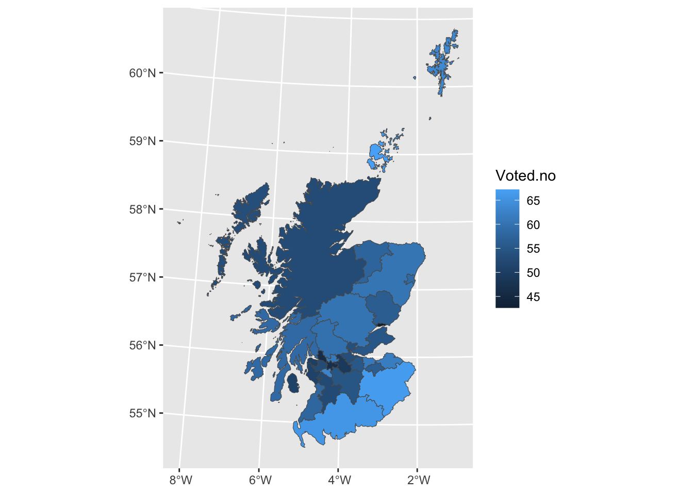
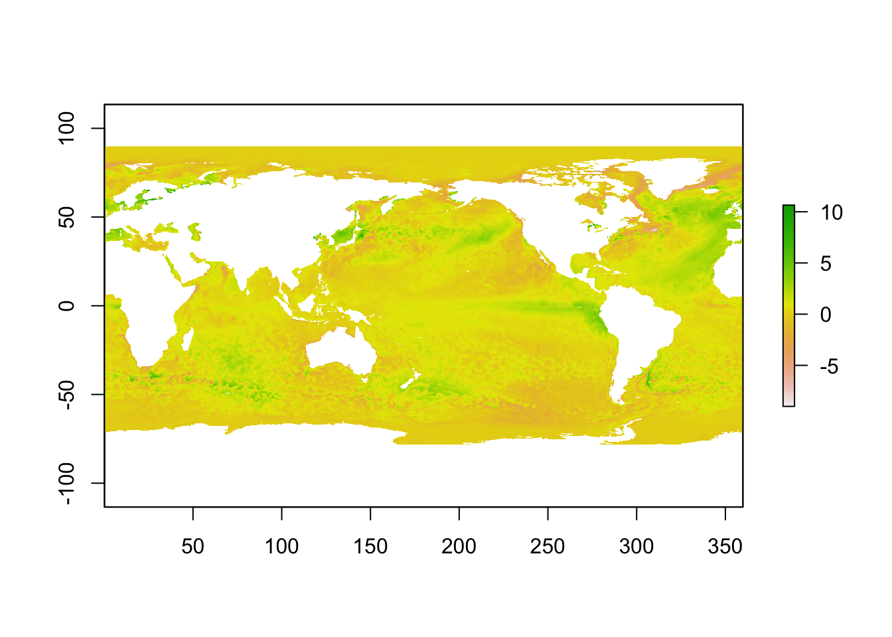

17.1 Visualising spatial data
There are many powerful tools for plotting spatial data and some of these are mentioned in this section. Many of these are also able to handle some of the special considerations neded for spatial data. The co-ordinate reference system (CRS) is one of those. Latitude and longitude are standard co-ordinates but data can often be spatially indexed in other ways, for example through Easting and Northing in a local reference system. Another issue is the use of shapefiles which contain the boundaries of regions of interest and other information. The sf package provides support for the simple features standard for representing spatial information.
17.1.1 The maps package
This package provides some basic tools for drawing countries and regions on standard plots. In the chapter on flexible models, data on SO\(_2\) across Europe was used as an example. The code below uses the map function to plot the locations of othe active monitoring stations in January 1990. Notice the use of :: because the function map is present in both the maps package and the tidyverse.
library(rpanel)
library(tidyverse)
library(maps)
SO2_1990 <- SO2 %>% filter(year == 1990 & month == 1)
with(SO2, {
maps::map(xlim = range(longitude), ylim = range(latitude))
points(longitude, latitude, col = "red", pch = 16)
})
17.1.2 leaflet and mapview: interactive maps
One of the very good features of R is that it can connect to many other computing systems, making these environments available without leaving R. One example is the leaflet Javascript library which provides many useful tools for the creation of interactive maps. Here is a simple example. When the code is executed in R it creates a map which can be scrolled and zoomed.
The addTiles function uses Open Street Map by default. Note the use of the ~ symbol in front of variable names. The popup argument allows us to
library(leaflet)
leaflet(SO2_1990) %>% addTiles() %>% addCircles(~longitude, ~latitude,
col = 'red', popup = ~site)The mapview package offers another means of creating interactive maps and it can use leaflet as its ‘engine’.
17.1.3 ggplot and ggmap
The ggplot2 visualisation system, part of the tidyverse can handle ‘sf’ information through a geom_sf geometry. An example of this is given in the section on areal data below.
17.1.4 tmap
This is a popular package which fits well with the tidyverse format of coding, but it will not be covered here.
17.1.5 spatstat for spatial point patterns
This package has a variety of useful tools for plotting spatial point patterns.
17.1.6 Areal data
There is a often a wish to investigate regional differences in a map, using well defined boundaries to define the regions of interest. This is a good way to visualise the Scottish Referendum data. A shape file, which provides the co-ordinates of the boundary of each region, has been downloaded from the ONS Open Geography Portal. This has been read into R as an object, using the ‘sf’ package, and then saved to the file UKLA.Rda. loading this file placess the object councils into the workspace.
The councils object contains details of all the local authorities in the UK so the filter function from the dplyr package is used to select out those identifiers which begin with ‘S’ for Scotland.
library(tidyverse)
library(sf)
path <- rp.datalink("scottish_referendum")
ref <- read.table(path, header = TRUE)
# path <- "~/iCloud/teaching/book/data_more/UKLA.Rda"
# load(path)
path <- "~/iCloud/teaching/book/data_more/Local_Authority_Districts_December_2023_Boundaries_UK_BUC_-1729940581044841319/LAD_DEC_2023_UK_BUC.shp"
# dest <- tempfile()
# download.file(path, dest)
# dest1 <- tempfile()
# unzip(dest, exdir = dest1)
# councils <- read_sf(dest1)
councils <- read_sf(path)
councils <- councils[substr(councils$LAD23CD, 1, 1) == "S", ]We then need to merge these two dataframes, councils and ref. The Council name is the obvious way to link the two but we need to check that the same names have been used. The code below checks whether each name in ref can be found in councils. This throws up some exceptions, so themutatefunction fromdplyris used to recode these names incouncilsto match. Theleft_joinfunction fromdplyrcan then be used to merge therefdataframe intocouncils`.
## [1] "Aberdeen" "Dundee" "Edinburgh" "Eilean Siar" "Glasgow"councils <- mutate(councils,
Scottish.Council = recode(LAD23NM,
`Na h-Eileanan Siar` = "Eilean Siar",
`Aberdeen City` = "Aberdeen",
`Glasgow City` = "Glasgow",
`Dundee City` = "Dundee",
`City of Edinburgh` = "Edinburgh"))
councils <- left_join(councils, ref, by = "Scottish.Council")Now we can plot the council regions as a map, using the geom_sf function in ggplot2 to handle all the drawing for us, and using a variable of interest to define the fill colour. Here we plot the proportion in each region voting ‘no’, plus a rescaling to show which regions have a majority for ‘yes’ or no’, and the level of turnout.

17.1.7 Image data
Not all datasets can be structured easily into simple row and column format. Even for those which can, the dataset may be so large that more efficient and compact forms of storage are required. For example, the netCDF (network Common Data Form) is commonly used to store data which has an array structure, often corresponding to dense spatial and temporal measurements, but involving multiple variables. These datasets may be large in size. Satellite data is one example. The netCDF standard is widely used to achieve efficient storage. The ncdf4 package in R provides tools for reading, handling and plotting this form of data.
An article on a heatwave in the sea around the UK in 2023 used satellite data from the National Oceanic and Atmospheric Administration (NOAA) in the USA. Sea surface temperature is one of the key climate change indicators.
The data for June 18, 2023 can be read from the NOAA repository using the file download mechanism discussed above. The ncdf4 package can then be used to extract the data we need. Use of the functions within the package require careful study of the help files and other documentation. The code below illustrates what can be done.
library(rpanel)
library(ncdf4)
path <- rp.datalink("sea_surface_temperature")
nc_data <- nc_open(path)
# print(nc_data)
lon <- ncvar_get(nc_data, "lon")
lat <- ncvar_get(nc_data, "lat", verbose = FALSE)
anom <- ncvar_get(nc_data, "anom")
fillvalue <- ncatt_get(nc_data, "anom", "_FillValue")
anom[anom == fillvalue$value] <- NA
nc_close(nc_data)This opens the datafile and extracts the latitude and longitude information as vectors which index the rows and columns of the matrix of anomaly (deviations from a long term average) measurements. The print(nc_data) instruction displays a lot of information on the content and source of the dataset but has been commented out above to save space. Missing data are also given the usual R representation.
To plot the data efficiently, the raster package is first used to put the data in raster format.
library(raster)
r <- raster(t(anom), xmn = min(lon), xmx = max(lon), ymn = min(lat), ymx = max(lat), crs = CRS("+proj=longlat +ellps=WGS84 +datum=WGS84 +no_defs+ towgs84=0,0,0"))
r <- flip(r, direction = 'y')
plot(r)
To explore the high temperatures near the UK in more detail, indicators are used to create a smaller array which focusses on the appropriate latitude and longitudes.
ind.lon <- which(lon > 345 & lon < 360)
ind.lat <- which(lat > 48 & lat < 60)
anom_UK <- anom[ind.lon, ind.lat]
r <- raster(t(anom_UK), xmn=min(lon[ind.lon]), xmx=max(lon[ind.lon]),
ymn=min(lat[ind.lat]), ymx=max(lat[ind.lat]),
crs=CRS("+proj=longlat +ellps=WGS84 +datum=WGS84 +no_defs+ towgs84=0,0,0"))
r <- flip(r, direction='y')
plot(r)
17.1.8 Spatiotemporal animation
The rpanel package includes an rp.plot4d function which uses animation to provide an extra dimension to displays. The rp.spacetime version of this function is intended particularly for data over space and time.
library(rpanel)
Month <- SO2$month + (SO2$year - 1990) * 12
Year <- SO2$year + (SO2$month - 0.5) / 12
location <- cbind(SO2$longitude, SO2$latitude)
mapxy <- maps::map('world', plot = FALSE,
xlim = range(SO2$longitude), ylim = range(SO2$latitude))
back <- function() maps::map(mapxy, add = TRUE)
rp.spacetime(location, Year, SO2$logSO2, col.palette = rev(heat.colors(12)),
background.plot = back)